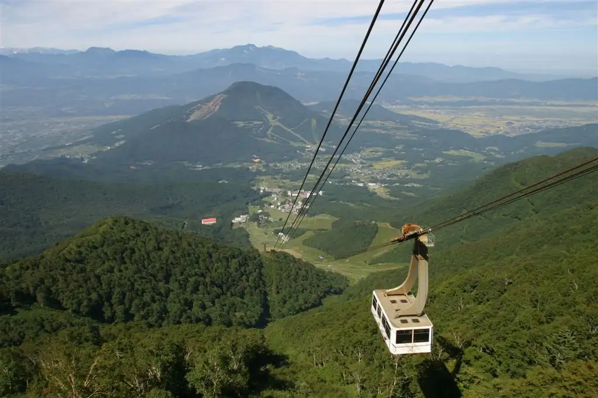
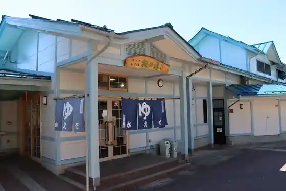

Japan / Nagano / Yamanochi
Yamanochi, Nagano: things to do, food and stays
Yamanochi · Nagano
Yamanochi
Highlighted on the Nagano map.

Sights
Ryuo Maunten Resort
Yamanochi, Nagano · Official / source link
Shigakogen Bijita Center (Kyu Naganoken Shigakogen Shizenhogo Center)
Yamanochi, Nagano · 0269-34-2133 · Official / source link
Kita Shigakogen Soba Uchi Experience
Yamanochi, Nagano · 0269-33-6000 · Official / source link
Yudanakaeki Mae Onsen Momiji Baths
Yamanochi, Nagano · 0269-33-2133 · Official / source link

X-JAM Takai Fuji
Yamanochi, Nagano · 0269-33-6252 · Official / source link
SORA GLAMPING RESORT
Yamanochi, Nagano · 0269-33-6345 · Official / source link
Puraibeto SPA (Bon (Bon)) / Yudanaka Onsen Yoro Zuya
Yamanochi, Nagano · 0269-33-2111 · Official / source link
Shiga Highlands Shiroi Onsen Gorge Baths
Yamanochi, Nagano · 0269-34-2207 · Official / source link
Okushiga Kogen Ski Area
Yamanochi, Nagano · 0269-34-2225 · Official / source link
Shigakogen Chuo Eria Ski Area
Yamanochi, Nagano · 0269-34-2301 · Official / source link